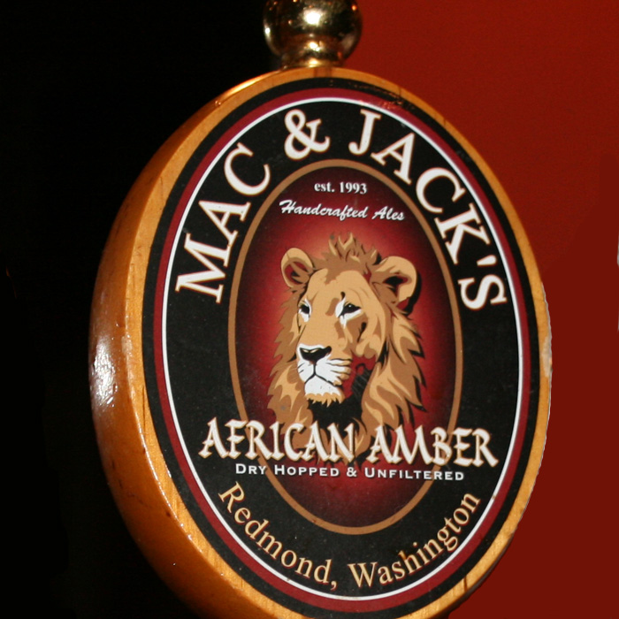

At Fremont Brewing Company, we’re serious about sustainability – and not just environmental but social and economic sustainability as well. That’s why we strive to reduce our carbon footprint as much as possible through energy conservation and zero waste production processes. And that’s why we provide our employees the best benefits we can afford and give back to the community that has so generously supported us throughout the years. Because it’s the right thing to do.
We do not have our own kitchen... so please feel free to bring your own food, get take-out, or have food delivered while you enjoy our beer[s!]. Seattle is home to an impressively delicious variety of food. We are more than happy if you bring food with you to our tasting room to enjoy. Please don't hesitate to ask us about what we think pairs best with your food... we're happy to help and thrilled to have you here. Cheers!
Welcome to Georgetown Brewing Company, a Seattle craft brewery and brewer of Manny's Pale Ale. We're a draft beer only production brewery, which means that all we do is make beer and fill kegs. Sorry, no brewpub, but we do have a retail shop where you can pick up kegs to go, growlers, and perhaps get a taste of our newest beer before it's released. Or you could be social and get out to your favorite local watering hole. If they don't have our beer on tap, let us know and we'll do our best to pester 'em into submission. Do we bottle? Not yet but we never say never. Right now we're focused on doing one thing right... draft beer. Cheers!
Ghostfish Brewing Company is a brewery with a mission: to elevate gluten-free beer to the forefront of craft brewing innovation. All three of our founders are either gluten-intolerant themselves or have loved ones who are, so we are acutely aware of how the craft brewing revolution has left gluten-intolerant drinkers behind. We believe fate has brought us together to help rectify that! We combine traditional brewing methods with non-traditional ingredients in a constantly-evolving repertoire of beer styles.
Ryan Hilliard founded Hilliard’s Beer in the Ballard neighborhood of Seattle on October 7, 2011 with a focus on making great craft beer with the best available ingredients. After many years of home-brewing, success with his pale ale at GABF provided a much needed kick-start to turning the dream into reality. Being a dad, he wanted to create something close to home and easily accessible as well as widely available to those who couldn’t make it to the brewery. This thinking led to a family friendly taproom and the decision to package primarily in cans.
Don and Donald worked tirelessly in the wee hours on their home brew mixtures, searching for the best possible combination of hops, malt, barley, and love. For long years, the two Dons had their separate dreams, and never met. A local poet named Bryan had the pleasure of growing up with Donald, and worked for the same local billionaire as Don. After many months of hearing Don speak of his dream of the magical beer haven, Bryan knew it must be the very same place of which Donald had spoken too. He knew instinctively that it was his responsibility to bring the two Dons together. On a fateful summer afternoon at the Elysian Brewery on Capitol Hill, the two Dons met. The event later became known as THE HAPPY HOUR OF DESTINY.
Brew, package, sell, and promote the best Northwest-inspired beer possible by fostering a wholesome and challenging work environment.Be a fixture of the Seattle community by adding value to the experience and culture of the city, reflecting the spirit of the Northwest through our products and practices.
The family friendly Pike Pub is located on-site with the Pike Brewery and right next door to Seattle’s world famous Pike Place Market. The Pike Pub’s chefs can be seen shopping at the Market, selecting local produce, seafood and seasonings for that day’s dishes. Our menu of pub fare classics, such as hand-formed burgers, unique pizzas, fresh salads and Dungeness crab chowder, are all carefully prepared and reflective of Northwest tastes. Your friendly and knowledgeable server can recommend Pike Brewing beers, locally made wines, ciders and spirits or soft drinks to pair with your meal. It’s all served amidst Pike Brewing’s extensive collection of beer memorabilia and in full view of our brewing kettle where you can watch our brewers at work.
Stoup Brewing is a long held dream of Brad Benson and Lara Zahaba – two hopeless drink and chow hounds. That the two found each other twenty years ago seems fated – Brad, a scientist to the very last DNA strand, would proffer a hypothesis based on proximity and human nature, we’re sure (ahem). Whatever your take, the takeaway is this: Brad loves beer and has been a loyal student, courter, and crafter for years that number beyond his fingers and toes. Lara loves all things gastro – from a savory plate to a smart pour. The pair, professionally and recreationally, have spent the better part of their hours improving their palate’s quality of life. It was only a matter of time before they ponied up and joined the community of talented purveyors.

Mac and Jack's Brewery
17825 NE 65th St.
Redmond, WA 98107
macandjacks.com
At Mac and Jack’s we are dedicated to making the finest ales in the Northwest. Most of our ingredients are from the Northwest, from the malted barley to the hops grown in Yakima. Located in Redmond, Washington, we invite you to join us on Saturdays and Sundays at 1 pm and 3 pm for a tour and sampling of the beers we currently produce.